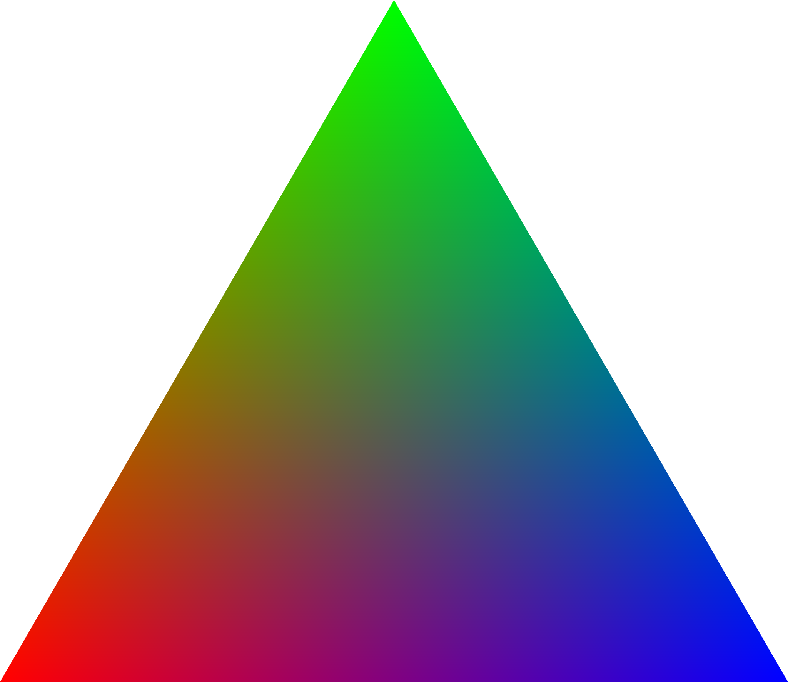

1. We find the maximum and minimum x and y coordinates based on the
three points of the triangle to build a bounding box.
2. We iterate over every pixel in the bounding box. If the center of
the pixel is in the triangle, we color the pixel the triangle's color.
3. To check whether or not a pixel is in the triangle, we compute if
the center of the pixel is within all 3 half-spaces of the triangle.
4. This requires checking the winding order of the points, which is
done by computing the cross product. If the cross product is negative
then we flip the order of the points, guarenteeing that the points are
always in clockwise order.

No new data structures were used.
To supersample, we rasterize triangles, points and lines to a higher
resolution (width * sqrt(sample_rate)), (height * sqrt(sample_rate)).
Each pixel at this higher resolution is saved to the sample_buffer,
which is now much larger than the framebuffer.
Once this is done, the sample_buffer is downsampled and then the
averaged pixels are drawn into the framebuffer.
The rasterization pipeline now has two stages; the first stage draws
a higher resolution image to the sample_buffer. The second stage
downsamples and draws the sample_buffer into the framebuffer.
Supersampling is useful because it removes jaggies and other image
artefacts.
To antialias my triangles with supersampling, we
convert from continuous space into the discrete sample_buffer, then
downsample from the sample_buffer to the framebuffer. This allows
the triangle's shape to be captured much more accurately.

Barycentric coordinates are a coordinate system that defines a point within a triangle as a linear combination of the three verticies of a triangle. Effectively, it describes the relative distance from a point to the three vertices of the triangle; this can be interpreted as the "influence" or "effect" a vertex. This is very useful when trying to interpolate a texture or color across the three verticies, as we know how much "weight" to assign to each vertex to find the desired interpolated color or texture.

To implement pixel sampling, we did the following for each triangle:
We found the bounding box for each triangle, and then sampled each
pixel in the bounding box (at the appropriate sample_rate). If sample
is within the triangle, we proceed. We then find the barycentric
coordinates of the point, and then transform it from the xy space to
the uv space by using the alpha beta gamma coefficients derived from
the xy space and applied into the uv space. The given uv vectors are
in the range [0-1], so we must scale it to the texture width and height.
This gives us the texel coordinate from which we can get the texture color.
Nearest pixel sampling rounds (nearest discrete x and y value) the scaled uv
coordinate to the closest texture sample location. Bilinear sampling, on
the other hand, takes the 4 nearest sample locations. It performs a
horizontal linear interpolation of the top 2 coordinates and another
horizontal linear interpolation of the bottom 2 coordinates, then a final
vertical linear interpolation on the 2 interpolated color values.
Level sampling helps select the appropriate resolution of the texture image to map onto the sample buffer, based on the position of the sample in the rendered scene.
To implement level sampling, we did the following for each triangle:
As with task 5, we proceed only if a sample is within a given triangle.
We find the barycentric coordinates of the point (x, y) and also for
neighboring screen samples -- (x+1, y) and (x, y+1). We use those
alpha, beta, and gamma coefficients to transform the present sample
and its neighbors from the xy space into the uv space.
We get the mipmap level by first using those three transformed coordinates to calculate differentials in the texture space (du/dx, dv/dx, du/dy, dv/dy), evaluating the difference between each of the transformed neighbor samples and the transformed (x, y) sample. We scale those differentials which are in range [0, 1] to the width and height of the texture/highest-res mipmap level. Finally, we calculate mipmap level by finding the log (base 2) of the max differential length. After calculating the mipmap level, we use the function "sample" to either round to the nearest discrete level or compute a linear interpolation on the colors mapped to the sample on both mipmap levels adjacent to the continuous value we have. In the rounding process for both cases, we clamp the levels to be between [0, max mipmap level]. The pixel sampling method is handled by the psmSample helper function and specified by psm.
Supersampling is by far the most powerful technique in terms of antialiasing, but is also the most expensive in both speed and memory as every "upgrade" in super sampling is an exponential increase in algorithmic and memory complexity. Level sampling is pretty fast; we simply compute colors twice, once for each D level. It also only incurs 33% more memory (in the form of downsampled textures). Pixel sampling requires the least resources in terms of memory; no extra memory is needed. It is a little slower than level sampling as you need to lerp three times (vs 1) in order to combine the four texel values in bilinear pixel sampling. Level sampling is more powerful than pixel sampling as it gets rid of high frequency signal when the sampling rate is low. This is very good at getting rid of visual artefacts. Pixel sampling is not as powerful as it only samples from the four adjacent pixels, while level sampling can work at a much larger scale.